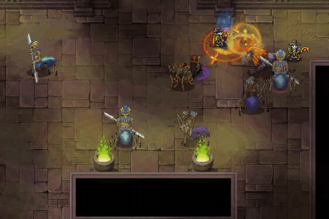
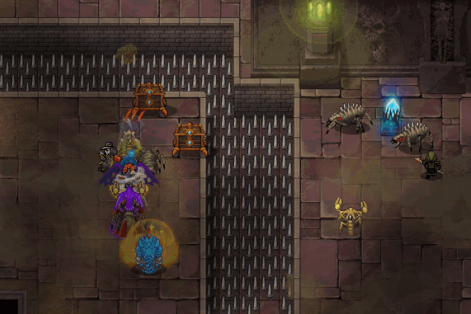

Game Design Portfolio – Alexandr Detushev
+382-68-541-158 · Sashadetush@gmail.com · LinkedIn · Resume
Project: Warspear Online ↗ · Google Play ↗ · App Store ↗
🔥 About me
Lead Game Designer with 6 years of experience on Warspear Online, where I own class design, endgame systems, talent progression, and live balance across a 20-class roster. My work sits at the intersection of combat systems, long-term progression, and player economy — in a game where players invest heavily and design decisions carry real weight.
I lead a small design team of 3 while staying hands-on with systems design, encounter design, and feature delivery. My background also includes shipping new playable classes, rebuilding the talent system, and designing seasonal content, which gives me a strong mix of leadership, live-service thinking, and hands-on design execution.


Warspear Online is a cross-platform live-service MMORPG that has been running for over 15 years, making it one of the earliest mobile MMOs with a long-term active player base.
The game features:
- Four factions and two opposing alliances with large-scale PvP
- 20 unique classes with distinct abilities, roles, and progression paths
- A vast open world with multiple continents, dungeons, and cities
- Deep guild systems with PvE raids and competitive guild warfare
- Regular seasonal events and a consistent live update cadence
- A player-driven economy with crafting, trading, and an in-game marketplace
Quick Overview
At a Glance
Lead Game Designer on Warspear Online with 6+ years in live MMORPG development. I lead systems design across class ecosystems, endgame content, and long-term progression in a game where balance changes directly affect player investment.
Core Work
- Playable classes and live balance across a 20-class roster
- Endgame systems for organized guilds, including competitive raids with seasonal leaderboards
- Long-term progression through talent trees and guild talent systems
- Player engagement systems tied to seasonal content, non-combat guilds, and repeatable activities
Highlights
- Designed and shipped 4 new playable classes: Templar, Chieftain, Beastmaster, Reaper — each filling a missing archetype and driving new itemization demand
- Built competitive guild raids with up to 15 difficulty tiers, seasonal showdowns, and leaderboard-driven competition
- Rebuilt the talent system into a core long-term progression pillar with per-class trees and talents that modify skill behavior
- Designed three non-combat guild systems combining daily engagement loops with guild-specific buildcrafting
Contents
Case Studies (Summary)

Playable Classes
I designed and shipped four new playable classes for Warspear Online. Each class was built to fill a missing archetype, open new itemization paths, and create new reasons for both new and existing players to invest in additional characters.
In a progression-heavy game, new classes directly affect the economy and player trust — new gear demand must coexist with the long-term value players have already built.
Quick overview
- Templar — a hybrid tank/support with strong control tools, built to close a gap in the Sentinels' faction toolkit. High skill ceiling with strong value in coordinated endgame content.
- Chieftain — a fast, solo-friendly class with strong QoL and high accessibility. One of the most popular classes in the game. Uses dual one-handed magical maces, driving demand for that weapon path.
- Beastmaster — a solo-friendly class built around a permanent combat companion. One of the most accessible entry points for new players. Uses a two-handed spear, creating clear upgrade pressure and a distinct gear identity.
- Reaper — a transformation-based class where abilities change behavior in form. Strong PvP identity built around timing, power windows, and resource management. Required dedicated UI support for readability.
Competitive Guild Raids
I designed the Competitive Guild Raids system as a core endgame pillar for high-level guilds. The goal was to create a repeatable PvE structure that also functions as a long-term competitive system with strong seasonal momentum.
Key points
- Seasonal raid showdowns tied to major game events
- Rotating raid encounters that also run outside seasonal structure
- Up to 15 difficulty tiers with staged mechanic escalation
- Rare power rewards, large gold payouts, and visible leaderboard competition
My role
Owned the design of the raid system, including all encounters, difficulty scaling, and reward structure. Another designer handled raid scheduling and entry UI.
Why it matters
- Creates a long-term PvE progression goal for top guilds beyond gear farming
- Acts as a strong economy sink through consumable and preparation item demand
- Drives cross-system engagement by linking raid participation with other progression systems
Talents and Long-term Progression
I rebuilt the talent system to establish a core long-term progression layer and enable meaningful build diversity. The goal was to move beyond obvious optimal builds and create a system that connects multiple gameplay loops.
The new structure introduced real differentiation, tied progression to multiple daily activities, and unified systems such as events, battle pass, and guild content under a shared progression framework.
Key points
- Talents are per character and per class, with separate guild-related talent trees
- Progression is spread across multiple activity types, each with its own daily cap
- Build switching is supported but costs resources — flexibility with weight
- Event talent trees refresh seasonally; class trees evolve over longer balance cycles
- Later talents modify skill behavior directly, not just stats
Why it matters
- Build diversity across the roster became meaningful rather than theoretical
- Improved daily engagement by removing a single optimal grind path
- Turned talent trees into a connective layer between seasonal content, guild systems, and core class progression
Non-Combat Guilds
Non-Combat Guilds are daily progression systems that extend buildcrafting through guild talent trees. Each guild has its own activity loop and thematic identity, but all follow the same principle: daily caps create regular return reasons, and guild talents add long-term character value that connects to class builds.
Guilds at a glance
- Adventurers — PvE loop built around searching for and activating procedural mini-dungeons in the open world
- Assassins — PvP loop with contested progress collection and a personal boss encounter as payoff
- Mages — hybrid loop starting with an open-world escort phase and ending in a wave-based tower encounter
Why it matters
- Supports daily retention without relying on a single content type
- Adds a second buildcrafting layer with class-specific effects
- Encourages social interaction by allowing players to benefit from other guild paths
Live Balance Approach
In Warspear Online, balance is not only a gameplay problem — it is a trust problem. Players invest heavily into characters over time, so major changes can feel like lost value. My goal is to keep the meta evolving without making players feel punished for past investment.
How I approach balance
- I avoid large direct nerfs when possible, instead strengthening alternatives to give players a positive direction to move into
- I sometimes change how an overperforming class plays rather than only cutting raw numbers
- I time changes around community readiness — shifts land better when players already understand the problem
- I treat balance as a long-term arc rather than a patch-to-patch reaction
Signals I track
- Forum and Discord sentiment
- Class activity and popularity trends
- Monetization patterns, especially around new classes and major reworks
Catacombs
I designed Catacombs as a timed group PvPvE dungeon built around extraction-style reward logic. The goal was to introduce a session-based risk-reward system into a classic MMORPG structure.
Players earn loot through PvE objectives, but that loot is not safe — dying drops part of it for others to claim. To secure rewards, players must successfully extract before the timer ends.
The mode combines PvE progression, PvP pressure, and risk management into a single session loop.
Why it matters
- Turns survival and extraction timing into core parts of the reward structure
- Creates tension through loot loss, contested space, and extraction decisions
- Introduces a modern session-based gameplay format into a traditional MMORPG framework
Deep Dives (Details)

This section focuses on design decisions, development challenges, and why specific choices mattered in practice.
The Summary section above is meant for a fast read. The blocks below are for deeper exploration of class design, endgame systems, long-term progression, and the supporting gameplay loops behind them.
Playable Classes
I designed these four classes to fill missing archetypes, expand itemization paths, and create new long-term character choices.
In the deep dives below, I focus on design intent, key decisions and trade-offs, the hardest development problems, and the impact on player behaviour, economy, and role coverage.

Templar was designed to close a missing control gap for the Sentinels. The concept was a monk-knight hybrid that supports allies and controls enemies. The main goal was to help Sentinels catch up with Legion in control tools while creating a class that rewards mastery and tactical play.
Templar is a hybrid tank/support with a high skill ceiling. The kit rewards timing and positioning, making it particularly effective in coordinated group play and endgame content, rather than as a beginner-friendly option.


A key design decision was to allow flexibility without losing class identity. Templar can wear heavy armor or cloth, and use either mace + shield or a staff. This was intended to support both a frontline controller build and a more support-oriented caster style while preserving a consistent core fantasy.
The control kit was designed around creating windows rather than permanent lockdown. The goal was to provide strong tools that still feel fair and readable. For example, Reverse Flow creates an area that pushes enemies away and can stun them, enabling space control instead of hard CC spam. Touch of Truth creates a short silence window with clear telegraphing, allowing counterplay. Whirlwind of Repentance applies slow and later reduces accuracy, reinforcing positioning and decision-making.
Impact
- Closed a faction-level gap in control tools for Sentinels
- Introduced a high-skill class that adds depth to coordinated group play
- Expanded build diversity through flexible gear and role options without fragmenting class identity
Development challenges
- Keeping control strong without turning fights into permanent lockdown
- Making the kit viable against both auto-attack and skill-based opponents
- Supporting multiple builds without creating balance traps
- Maintaining readability and fairness through clear telegraphing of strong effects

Chieftain was designed as a mobility-first class focused on smooth solo play and high accessibility. The goal was to create a fast, responsive character with strong quality of life — clear tools for single target and AoE, reliable self-healing, and easy-to-read abilities. This combination made the class both beginner-friendly and highly effective in solo progression.
Chieftain uses one-handed magical maces and can wield two at once. I chose this weapon setup to create a clear and scalable gear path, increasing demand for that weapon category and giving players a fresh reason to invest even on established accounts.


Impact
- Became one of the most popular classes in the game, especially for solo play
- Introduced a new itemization path through dual magical maces, increasing demand for that weapon category
- Improved onboarding experience by providing a smooth and accessible class with strong early-to-mid game performance
Development challenges
- Making mobility feel powerful without removing risk and decision-making
- Keeping the class beginner-friendly without making it shallow at endgame
- Establishing dual one-handed magical maces as a strong identity without locking the class into a single build path

Beastmaster was designed as a solo-friendly class built around a permanent combat companion. The goal was to create a strong onboarding option for new players while preserving depth for long-term play. The companion is not timed — it stays active until it dies, and resummoning it acts as a failure state. This creates a forgiving baseline for solo play while still introducing meaningful consequences for mistakes.
Beastmaster uses a two-handed spear as its primary weapon. I chose this to establish a clear gear identity and create long-term upgrade pressure, encouraging investment into spear progression, sharpening, and upgrades. It also opened a fresh equipment path for established accounts.
The class can function as a damage dealer or support in group play, ensuring long-term relevance beyond early progression. This allows the class to transition smoothly from onboarding into mid- and endgame content.

Impact
- Became one of the most accessible entry points for new players
- Supported early retention by providing a forgiving but engaging solo experience
- Created a distinct itemization path through spear-based progression
- Maintained long-term viability through dual-role functionality in group content
Development challenges
- Making the companion helpful without turning it into autopilot
- Treating the companion as a real gameplay resource with meaningful failure states
- Beginner-friendly kit with real optimization depth
- Maintaining strong weapon identity without narrowing viable playstyles

Reaper was built around one core idea: transformation as a real gameplay state. The goal was to make transformation a meaningful decision that changes player behavior, not just a temporary power boost. Your decisions change your entire toolkit, not just numbers. Abilities gain additional properties in form, and transformation costs a dedicated resource with a cooldown. This creates a natural rhythm: build up, choose the moment, transform, then play a stronger window.
Because the class relies on state switching and an extra resource, I designed dedicated UI elements to ensure clarity and readability. The player must always understand their current form, resource level, and available options at a glance.
Reaper is a strong PvP class built around timing and commitment. The transformation window creates pressure and timing advantages — commit at the wrong moment and you get punished, manage your cooldowns correctly and you dominate the fight. This creates a high-risk, high-reward playstyle with strong player expression.
Impact
- Introduced transformation as a core gameplay mechanic with real decision weight
- Added a high-skill PvP class focused on timing, resource management, and power windows
- Expanded build and gameplay variety through state-based ability changes
- Required and validated new UI solutions for readability in complex state-driven gameplay
Development challenges
- Transformation window that feels powerful but has clear counterplay
- Readable state and resource UI at a glance
- Strong PvP power without removing punish moments
- Skills changing behavior in form without complexity overload

Competitive Guild Raids
After expanding the class roster, the next major focus was organized endgame. Competitive Guild Raids became a core system for top guilds, combining repeatable PvE with a long-term competitive structure.

The system was designed as an endgame pillar for high-level guilds. The core goal was to create repeatable competitive PvE that strengthens guild identity and provides meaningful progression incentives for coordinated play.
Raids run as timed showdowns with leaderboards and clear progression. Difficulty scaling is part of the motivation loop — each new tier demands better execution, preparation, and teamplay. Some seasons start with 10 difficulty levels and expand to 15, allowing guilds to adapt while building sustained engagement throughout the season.
The system is supported by dedicated UX design focused on clarity and accessibility. Players can quickly access raid functions, check rewards, track results, and compare guild standings. This makes the competitive layer visible and easy to follow, which helps drive participation and long-term retention.
Raid seasons create a strong sink for consumables and entry resources. The reward structure offers rare power rewards and large gold payouts that matter to top guilds, while preparation needs drive engagement across other game systems.
My role
I owned the design of the raid system, including all encounters, difficulty scaling, and reward structure. Another designer handled the raid scheduling and entry UI.
Impact
- Established a core endgame system for competitive guild play
- Supported long-term engagement for organized player groups through seasonal progression and leaderboard competition
- Created a strong and sustainable economy sink tied to high-level play
- Encouraged cross-system participation by linking raid preparation to other game activities
Development challenges
- Building competitive PvE that stays fun across repeated runs
- Designing difficulty scaling through mechanics rather than pure stat inflation
- Ensuring clear UX for standings, rewards, and seasonal results
- Balancing economy impact without making the system feel mandatory for all players

I owned full encounter design for all raids. The goal was to create fights that feel like true guild content — with coordination checks, role pressure, and decision points that scale with difficulty.
A core design principle was staged complexity. Lower difficulties teach the fight and establish patterns. After key thresholds, the raid introduces new mechanics or stronger versions of existing ones. This ensures that progression remains meaningful and continuously introduces new challenges instead of repeating solved patterns.
Readability was a critical requirement. In competitive content, players accept failure only if it feels fair. Mechanics must be clearly telegraphed, punish windows must be learnable, and success must feel earned. I also designed encounters with anti-cheese considerations, ensuring that high-end strategies do not bypass intended gameplay while still allowing creative solutions.
Another key system was resource pressure. Raids push players into preparation and consumption, making healing resources, buffs, and recovery tools part of strategic decision-making. This supports the economy loop organically, without relying on artificial restrictions — players spend because it improves their chances of success.
Impact
- Created scalable encounter difficulty that supports long-term progression and mastery
- Maintained engagement across repeated runs by introducing new mechanics instead of pure stat scaling
- Reinforced fair challenge through strong readability and counterplay design
- Supported the in-game economy by integrating resource consumption into encounter strategy
Development challenges
- Designing mechanics that scale difficulty through skill rather than only stat increases
- Keeping encounters readable under chaos and high player density
- Preventing degenerate strategies without removing player creativity
- Balancing pressure to feel intense but not exhausting
Talents and Long-term Progression

This section focuses on how the Talent system supports build diversity, daily engagement, and long-term progression. The goal was to create a system that adds meaningful build identity and connects progression across multiple gameplay loops, rather than simply increasing player power through stats.
When I started working on the project, the talent system felt too shallow and lacked long-term goals. I rebuilt it almost from scratch to establish a core progression layer that supports build diversity, daily engagement, and a sustainable live economy.

Talents are tied to each character and class, with separate guild-related trees. This makes them a meaningful build layer rather than a passive bonus system.
Progression is intentionally spread across many activity types. Each source has its own cap, which avoids a single optimal grind path and pushes healthier daily variety. This was a deliberate decision to encourage diverse engagement and prevent burnout from repetitive grinding. This also lets the system connect naturally to seasonal content, events, and battle pass.
Build switching is supported, but it is not free. I designed it as a controlled resource sink to allow experimentation while preserving meaningful choices, and to absorb excess resources at later progression stages.
Event talent trees refresh multiple times per year, while class trees evolve over longer cycles and receive regular balance updates. This keeps the system active and prevents meta stagnation.
Over time, talents moved beyond raw stat bonuses and began modifying skill behavior directly, making build choices more visible and impactful in gameplay, instead of leaving them as passive efficiency upgrades that only mattered on paper.
Examples of talent-driven gameplay changes
- Templar — One talent made Combat Support deal magic damage around the protected ally or the Templar himself, turning a purely defensive ability into a hybrid tool that creates local pressure and rewards positioning.
- Chieftain — One talent added a damage-taken debuff through Thrashing, with the effect scaling based on the number of targets hit, pushing the skill toward a stronger setup and pressure role instead of leaving it as just another AoE button.
- Beastmaster — One talent made the summoned companion create a cursed damage zone when it died or disappeared, adding expressive value to summon management and turning the pet into both a sustained tool and a delayed threat.
- Reaper — One talent reinforced the payoff after transformation by tying extra value to form timing and Hate management, making the class more about decision timing and resource conversion rather than simple cooldown usage.
Impact
- Turned talents into a core progression system rather than a secondary stat layer
- Improved build diversity across the roster through skill-modifying talents
- Increased daily engagement by distributing progression across multiple capped activities
- Connected seasonal content, guild systems, and core progression into a unified system
- Introduced a sustainable resource sink through build switching and progression scaling

Development challenges
- Daily caps that encourage variety without feeling restrictive
- Supporting build diversity without creating unsustainable balance complexity
- Keeping build switching flexible while preserving meaningful decisions
- Ensuring the system scales with future classes, events, and guild layers
Non-Combat Guilds
This section covers the three non-combat guilds and how they function as both daily engagement loops and an additional build layer. Each system has its own gameplay loop while contributing to long-term character progression through reputation and guild talents.

Non-Combat Guilds were designed as daily engagement systems with long-term value. Each guild has its own theme and gameplay loop, but all serve two broader goals: reliable recurring activities and extended buildcrafting through guild talent progression.
A key structural decision was exclusivity. Players can only belong to one guild at a time. Leaving removes accumulated reputation and triggers a 24-hour lockout before joining another. I introduced this constraint to make guild choice meaningful and increase commitment to a chosen progression path.
Unique guild mechanics are unlocked through the talent tree and only function on the guild's territory. This gating makes progression feel earned and gives the system a stronger long-term arc. The same trees also add class-specific effects, so guild progression changes how characters are built, not only what rewards they collect.
Players can also benefit from other guild activities if another player helps open access. This was designed to create structured cooperation and reduce isolation between progression paths.
Impact
- Added multiple parallel daily engagement loops instead of relying on a single activity type
- Extended buildcrafting through guild-specific talents and class interactions
- Supported player retention by providing consistent long-term progression goals
- Encouraged social interaction through shared access and cooperative play patterns
Development challenges
- Making exclusive guild choice feel meaningful without creating fear of commitment
- Territorial restrictions that add identity without frustrating players
- Turning guild progression into a real build layer instead of a reputation-only track
- Creating long-term value without making the system feel like mandatory daily chores
- Social access that encourages cooperation rather than frustration

Adventurers are the PvE-focused guild path, but the core loop goes beyond a standard dungeon run. Players search the desert for the correct entrance among several marked locations, activate a hidden object, and open a temporary mini-dungeon for their group. This was designed to shift the experience from a queue-based activity to exploration and discovery.
That structure was important for pacing. The activity starts in the open world, introduces a short search phase, and then transitions into a self-contained PvE run. I structured it this way to create a lighter, more repeatable loop compared to full-scale organized content, while still feeding long-term guild progression through reputation and talents.
Impact
- Introduced a repeatable PvE loop that combines exploration with instanced gameplay
- Improved daily engagement by offering a lighter alternative to large-scale group content
- Reinforced long-term progression through integration with guild reputation and talents
Development challenges
- Making the search phase feel meaningful without becoming annoying
- Keeping repeatable mini-dungeons varied enough for daily use
- Letting the activity feel exploratory while still remaining readable and efficient for regular players

Assassins are the PvP-focused guild path, built around a risk-reward loop with real player-to-player tension. The goal was to make PvP progression feel productive, not just adversarial. After unlocking the mechanic through the guild talent tree, players gain a progress bar that appears on the guild's territory.
The bar fills by killing special PvPvE monsters that drop "Information." But progress is not safe. If another Assassin kills you, they steal a portion of your progress — the amount lost equals the amount gained by the killer. I designed this transfer to create direct PvP incentives while maintaining a clear risk-reward structure.
When the bar reaches 100%, a personal entrance to a boss dungeon appears at a random location on the map, visible only to that player. After activation, the entrance becomes available to the player's group for a limited time. If the player dies and loses progress before entering, the entrance disappears and a new random location is assigned on the next fill.
This structure creates a much stronger tension curve than a typical daily activity. The progress bar makes PvP feel productive, not just adversarial. The personal entrance adds discovery. The boss dungeon provides PvE payoff. And the risk of losing progress keeps each session unpredictable.
Impact
- Created a PvP progression loop where player interaction directly affects rewards
- Introduced a strong tension curve through loss, recovery, and payoff mechanics
- Connected PvP pressure with PvE rewards, increasing cross-system engagement
- Encouraged emergent player behavior through risk, competition, and opportunity
Development challenges
- Creating PvP incentives where losing progress feels tense but not hopeless
- Designing progress transfer that rewards aggression without punishing casual players too heavily
- Ensuring personal entrance randomization feels like discovery rather than busywork
- Connecting PvP pressure to a satisfying PvE payoff through the boss dungeon

Mages were designed as the most system-heavy of the three guild paths. The goal was to create a multi-phase gameplay loop that combines several types of player activity into a single cohesive experience. The loop starts in the open world, where the player locates and activates a magical object, summons a bound creature, and then follows it across the desert while clearing hostile spawns that appear along the route. When the escort reaches the destination, the player activates the entrance and moves into a separate tower encounter with wave-based PvE combat.
This structure was important because it combines several kinds of play in one flow: navigation, protection, transition, and payoff. Compared to the other guilds, Mages feel less like a single task and more like a short adventure with a clear beginning, middle, and end.
The talent layer makes this guild especially strong from a systems perspective. I designed the mechanic to be unlocked through the guild tree, with the same tree also enhancing both the escort and tower phases. This creates a direct link between activity design and buildcrafting, where progression meaningfully changes how the system is played.
Impact
- Introduced a multi-phase gameplay loop that combines exploration, escort, and instanced PvE into a single system
- Increased engagement through varied gameplay within a single session structure
- Strengthened the connection between progression and gameplay through talent-driven improvements
- Provided a more narrative-like experience compared to other daily systems, improving variety and player interest
Development challenges
- Making the escort phase readable and reliable across multiple locations
- Keeping the PvE payoff strong enough to justify the longer setup
- Designing talent progression that enhances the system without reducing it to an optimal routine
Catacombs
This section covers a session-based PvPvE dungeon built around loot risk, extraction timing, and group-based hostility. The goal was to create a mode where reward value depends not only on what players earn, but on whether they successfully extract with it.


Session Flow
Lobby registration → timed PvPvE run → pressure from monsters and hostile groups → extraction choice → secured rewards through Catacomb Storage.
Catacombs was designed as a timed group PvPvE dungeon with extraction-style reward logic. The core idea was to create a mode where rewards are earned inside the session, but only become fully secured if the group exits successfully before the timer ends.
Inside the mode, players complete PvE objectives, fight over space, and gather virtual rewards such as currency and items. That reward state creates tension because it is not fully safe. If a player dies, part of the earned loot is dropped into the instance as a separate object that can be claimed by others. I introduced this mechanic to turn death into a meaningful risk event and make player encounters high-stakes decisions rather than simple setbacks.
The extraction layer defines the mode's identity. There are different ways to leave: a safe evacuation path and an emergency exit with a penalty. This was designed to create a continuous risk-reward decision: push for more value or secure current gains. That choice is where a large part of the tension comes from.
From a systems point of view, Catacombs also needed a clear session structure. Access happens through a lobby object, groups register in advance, and the mode starts only when participation reaches the required threshold. Hostility inside the instance is determined by group, which makes team coordination and target recognition especially important.
Another key design layer is reward conversion. Knowledge, currency, and reputation are granted directly, while item rewards are moved into Catacomb Storage after the run. I separated immediate and stored rewards to keep the system readable and support both instant and delayed gratification.
Impact
- Introduced a session-based PvPvE mode with extraction-driven reward logic
- Created high tension through loot risk, player interaction, and exit decisions
- Encouraged strategic play by linking PvE progress, PvP pressure, and extraction timing
- Added a modern session format to a traditional MMORPG structure, expanding gameplay variety
Development challenges
- Creating real loot tension without making losses feel unfair or random
- Making PvE objectives and PvP pressure reinforce each other instead of competing
- Designing extraction decisions that feel meaningful rather than scripted
- Structuring registration, matchmaking, and storage to keep the session clear and understandable
Playable Classes
- Update 9.0 Preview — Templar & Chieftain
- Update 9.0 Release
- Update 11.0 Preview — Beastmaster & Reaper
- Update 11.0 Release
Competitive Guild Raids
Talents & Long-term Progression
- Update 13.0 Announcement Part II — Mage's Guild talents
- Update 13.2 Announcement Part I — class skill & talent balance
Non-Combat Guilds
- Almahad, the Isle of Chainless League. Part II
- Rise of Almahad. Announcement
- Rise of Almahad. Release
- Treasures of Almahad. Announcement
- Update 13.0 Announcement Part II — Mage's Guild talents
- Update 13.0 Release
Catacombs